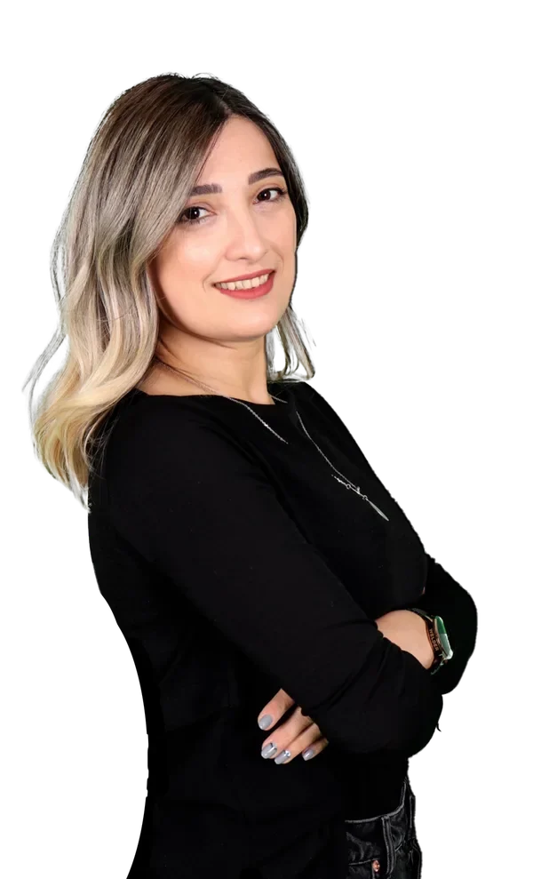

EsraTaşdemiroğlu
Uzman Psikolog / Aile Danışmanı
Yüz yüze veya online olarak psikolojik danışmanlık hizmeti

Çalışma Alanları
Yetişkinler
Çiftler
Terapi Teknikleri
- Duygu Odaklı TerapiLeslie S. Greenberg tarafından geliştirilen, duyguların değişimdeki etkisini vurgulayan psikoterapi ekolü.
- Şema TerapiÇocukluktan başlayıp yaşam boyu tekrar eden düşünce, duygu ve davranış kalıplarında değişim yaratmayı odak alır.
- EMDRGöz Hareketleriyle Duyarsızlaştırma ve Yeniden İşleme; işlenmemiş anıların işlenmesini sağlayan fizyolojik temelli bir terapi.
- PACTÇift Terapisinde Psiko-biyolojik Yaklaşım; çiftlerin güvenli işleyen bir ilişki meydana getirmelerini hedefler.
- E-posta
- esrakock@gmail.com
- Telefon
- (0312) 466 38 00
- Adres
- Neorama İş Merkezi No:84 Kat: 18, Söğütözü, Çankaya, Ankara